6.5 矩阵的运算及其运算规则
一、矩阵的加法与减法1、运算规则 设矩阵  ， ， ， ，则 
简言之，两个矩阵相加减，即它们相同位置的元素相加减！ 注意：只有对于两个行数、列数分别相等的矩阵（即同型矩阵），加减法运算才有意义，即加减运算是可行的． |
|
2、 运算性质 （假设运算都是可行的） 满足交换律和结合律 交换律 结合律 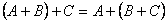． |
二、矩阵与数的乘法1、 运算规则 数 特别地，称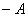称为 2、 运算性质 满足结合律和分配律 结合律： (λμ)A=λ(μA) ； (λ+μ)A =λA+μA． 分配律： λ (A+B)=λA+λB． |
|
典型例题 例6.5.1 已知两个矩阵 解 由已知条件知 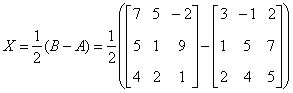 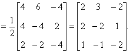 |
三、矩阵与矩阵的乘法1、 运算规则 设  ， ， ，则A与B的乘积 ，则A与B的乘积 是这样一个矩阵： 是这样一个矩阵：(1) 行数与（左矩阵）A相同，列数与（右矩阵）B相同，即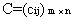． (2) C的第 |
|
典型例题 例6.5.2 设矩阵 
解 
 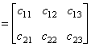
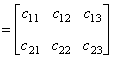

想一想：设列矩阵  ，行矩阵 ，行矩阵 |
|
课堂练习 1、设  ，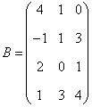，求 ，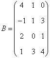，求2、在第1道练习题中，两个矩阵相乘的顺序是A在左边，B在右边，称为A左乘B或B右乘A．如果交换顺序，让B在左边，A在右边，即A右乘B，运算还能进行吗？请算算试试看．并由此思考：两个矩阵应当满足什么条件，才能够做乘法运算． 3、设列矩阵 ，行矩阵4、设三阶方阵  ，三阶单位阵为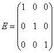，试求 ，三阶单位阵为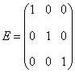，试求 |
|
解： 第1题  ． ．对于 ，． |
|
结论1 只有在下列情况下，两个矩阵的乘法才有意义，或说乘法运算是可行的：左矩阵的列数＝右矩阵的行数． 第3题 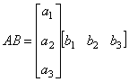  ． ． 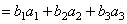
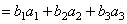
结论2 在矩阵的乘法中，必须注意相乘的顺序．即使在 第4题 计算得：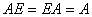． 结论3 方阵A和它同阶的单位阵作乘积，结果仍为A，即． 单位阵在矩阵乘法中的作用相当于数1在我们普通乘法中的作用． |
|
典型例题 例6.5.3 设 解 
 ． ．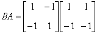 
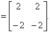 结论4 两个非零矩阵的乘积可以是零矩阵．由此若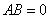，不能得出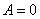或 |
|
例6.5.4 利用矩阵的乘法，三元线性方程组  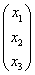＝，
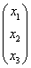＝， ， ， ， ， |
|
2、 运算性质（假设运算都是可行的） (1) 结合律 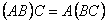． (2) 分配律 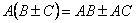（左分配律）； (3) 3、 方阵的幂
|
四、矩阵的转置1、 定义
的转置矩阵为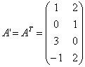．2、运算性质（假设运算都是可行的） (1) 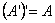 (2) 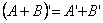 (3) 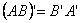 (4) |
|
典型例题 例6.5.5 利用矩阵 解 而 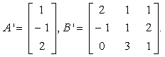 所以 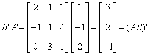． |
|
五、方阵的行列式1、定义
2 、运算性质 (1) 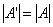 （行列式的性质） (2) (3) 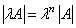（ 思考：设A为 |
|
不妨自行设计一个二阶方阵，计算一下 例如  ，则 ，则 ． ．于是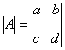，而 
思考：设 解 方法一：先求矩阵乘法 方法二：先分别求行列式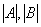，再取它们的乘积． |